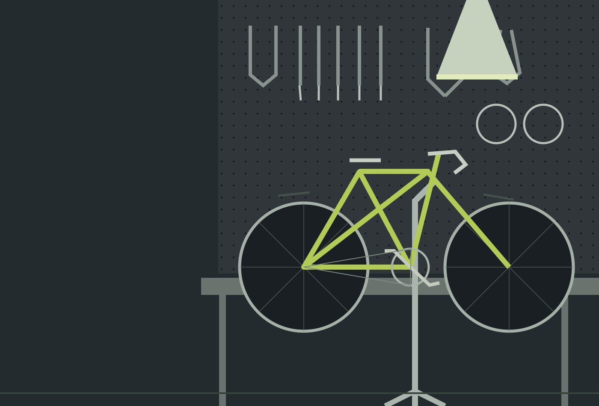

COMMUTER
£480–£1,400
Hub gears, mudguards, dynamo lighting and a rack. Built for four seasons of getting to work rather than for a spec sheet.
Ask about commuters ↗
Manchester · Workshop first · Since 2011
A workshop with a shop attached rather than the other way round. Three Cytech mechanics, honest turnaround times, and we will tell you when a repair is not worth the money.
ORIGINAL WORKSHOP ILLUSTRATION / CONCEPT BUSINESS
Punctures & brake fixes until 4pm
Call to confirm same-day capacity
11 bikes in the queue
Example data, not a live feed
01 / On the stand
Clear work. Clear price.
No surprise parts.
Queue + service allowance. Estimate only; parts extra where needed.
02 / Just the job
03 / Out the door
£480–£1,400
Hub gears, mudguards, dynamo lighting and a rack. Built for four seasons of getting to work rather than for a spec sheet.
Ask about commuters ↗£1,200–£4,200
Steel and aluminium frames, clearance for 45mm, mounts for everything. Built to your fit before it leaves.
Find your gravel bike ↗£220–£900
Fully serviced, warrantied, and honestly described. Usually the best value in the shop.
The refurbishment standard ↓04 / A second life
Stripped to the frame, bearings replaced or repacked, new cables and housing, new chain, new bar tape or grips, and a safety check signed off by a Cytech mechanic.
We list the frame's age, the parts we replaced and the parts we did not. Every second-hand bike carries a six-month warranty on the work and a free service at six weeks.
Refurbishment worksheet
Illustrative shop policy from the brief.
05 / Fit comes first
Saddle height and setback, bar height and reach, cleat position. Best for commuters and anyone with a new bike.
Everything in the basic, flexibility and pelvic assessment, three-plane video analysis, and a written report with replicable numbers.
06 / How we work
We will tell you when a repair costs more than the bike is worth. It happens weekly and we would rather lose the job.
We will not release a bike we consider unsafe. If a frame is cracked, we show you where and refuse to build it back up.
We service bikes we did not sell, at the same price. A shop that charges more for other people's bikes is telling you something.
We show you the old part. Every replaced component goes in a tray with your name on it.
07 / Saturday is for riding
Three pace groups. Café stop always included. Nobody gets left behind in the first two groups.
Example route board. Confirm this week's route and safety arrangements with the shop.
Route board in the window every Thursday.
08 / Drop by
Manchester M3 5DF
0161 555 0173
Tue–Fri 9:00–18:00
Sat 9:00–17:00
Sun and Mon closed
Drop in for punctures, brake adjustments and jobs under fifteen minutes. Everything else, book. Covered bike parking in the yard round the back.